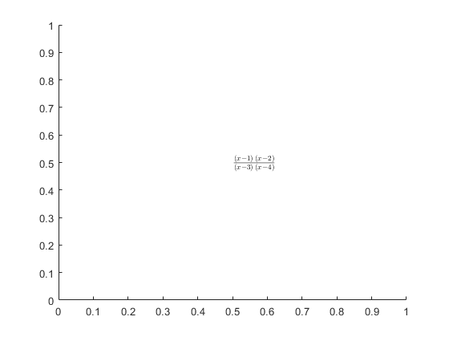
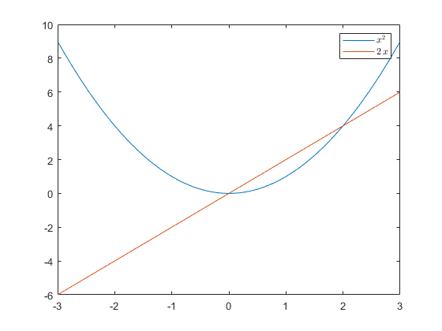
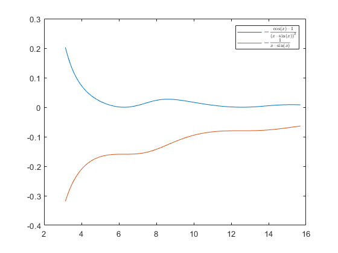

Contents
- piemērs 1: Simboliskie elementi
- piemērs 2: Simbolisko elementu definēšana
- uzdevums 1: izveidot 3*3 a indeksētu matricu ar visiem trīs variantiem
- piemērs 3: Atvasināšana
- uzdevums 2: aprēķināt atvisnājumu funkcijai z = a.*x.^2
- uzdevums 3: aprēķināt atvasinājumu savai funkcijai
- piemērs 4: Integrēšana
- uzdevums 4: darbības ar integrēšanu
- piemērs 5: noteiktais integrālis
- uzdevums 5: aprēķināt noteikto integrāli
- uzdevums 6: integrālis, robežas, vienādojumi
- uzdevums 7: "individualized task 2023"
- piemērs 6: vienkāršošana
- piemērs 7: kā skaistāk attēlot
- piemērs 8: substitūcija
- uzdevums 8: Substitūcijas
- piemērs 9: grafika zīmēšana pēc simboliskās izteiksmes
- uzdevums 9: "individualized task 2023"
piemērs 1: Simboliskie elementi
syms a b c d A = [a b;c d] syms h g p q B = [h g;p q] C = A*B D = A.*B fprintf('\npiemērs 1 end\n')
A = [a, b] [c, d] B = [h, g] [p, q] C = [a*h + b*p, a*g + b*q] [c*h + d*p, c*g + d*q] D = [a*h, b*g] [c*p, d*q] piemērs 1 end
piemērs 2: Simbolisko elementu definēšana
% pirmais veids fprintf('\npirmais veids kā def') a = sym('a'); % aprēķins sqrt(a^2) % definīcija, a, kur a > 0 a = sym('a','positive'); % aprēķins sqrt(a^2) % otrais veids fprintf('\notrais veids kā def') syms a b c d A = [a b; c d] A' %{ "'"(apostrofs) - transponēšana Kompl. skaitļiem tas taisa kompl. saistītus skaitļus("conj"conjunction). Simboliskais mainīgais šajā situācijā ir domāts kompl. skaitlis. (Šis visticamāk būs noderīgi fizikas atvasinātos priekšmetos ar laukiem utt.) %} % def a b c d kā ne kompl. sk. syms a b c d real A = [a b; c d] A' % trešāis veids fprintf('\ntrešais veids kā def') % uzreiz def izveido matricu, pieliek indeksus A = sym('a',[2 3]) fprintf('\npiemērs 2 end\n')
pirmais veids kā def ans = (a^2)^(1/2) ans = a otrais veids kā def A = [a, b] [c, d] ans = [conj(a), conj(c)] [conj(b), conj(d)] A = [a, b] [c, d] ans = [a, c] [b, d] trešais veids kā def A = [a1_1, a1_2, a1_3] [a2_1, a2_2, a2_3] piemērs 2 end
uzdevums 1: izveidot 3*3 a indeksētu matricu ar visiem trīs variantiem
% pirmais veids fprintf('\npirmais veids kā def') a11 = sym('a11'); a12 = sym('a12'); a13 = sym('a13'); a21 = sym('a21'); a22 = sym('a22'); a23 = sym('a23'); a31 = sym('a31'); a32 = sym('a32'); a33 = sym('a33'); A = [a11 a12 a13; a21 a22 a23; a31 a32 a33] A*A A.*A fprintf('Absolūti neērti, katru elementu jādefinē atsevišķi.\n') % otrais veids fprintf('\notrais veids kā def') syms a11 a12 a13 a21 a22 a23 a31 a32 a33; A = [a11 a12 a13; a21 a22 a23; a31 a32 a33] A*A A.*A fprintf('Ērtāk, jo visi mainīgie tiek definēti vienā rindā,\nvēlprojām neērti, jo matricu jādefinē pa atsevišķiem elementiem.\n') % trešāis veids fprintf('\ntrešais veids kā def') A = sym('a',[3 3]) A*A A.*A fprintf('Ērtākais veids kā definēt, jo elementi tiek indeksēti automātiski.\n') fprintf('\nAtbilde uz uzdevumu:\n') fprintf('Izteiksme "A*A" reizina matricas.\n') fprintf('Simbols "." norāda "elementwise" darbību.\n') fprintf('Izteiksme ".*" reizina elementus ar savstarpēji vienādiem indeksiem,\n') fprintf('jeb "A.*A" gadijumā, katrs elements tiek kāpināts kvadrātā.\n') fprintf('\nuzdevums 1 end\n')
pirmais veids kā def A = [a11, a12, a13] [a21, a22, a23] [a31, a32, a33] ans = [ a11^2 + a12*a21 + a13*a31, a11*a12 + a12*a22 + a13*a32, a11*a13 + a12*a23 + a13*a33] [a11*a21 + a21*a22 + a23*a31, a22^2 + a12*a21 + a23*a32, a13*a21 + a22*a23 + a23*a33] [a11*a31 + a21*a32 + a31*a33, a12*a31 + a22*a32 + a32*a33, a33^2 + a13*a31 + a23*a32] ans = [a11^2, a12^2, a13^2] [a21^2, a22^2, a23^2] [a31^2, a32^2, a33^2] Absolūti neērti, katru elementu jādefinē atsevišķi. otrais veids kā def A = [a11, a12, a13] [a21, a22, a23] [a31, a32, a33] ans = [ a11^2 + a12*a21 + a13*a31, a11*a12 + a12*a22 + a13*a32, a11*a13 + a12*a23 + a13*a33] [a11*a21 + a21*a22 + a23*a31, a22^2 + a12*a21 + a23*a32, a13*a21 + a22*a23 + a23*a33] [a11*a31 + a21*a32 + a31*a33, a12*a31 + a22*a32 + a32*a33, a33^2 + a13*a31 + a23*a32] ans = [a11^2, a12^2, a13^2] [a21^2, a22^2, a23^2] [a31^2, a32^2, a33^2] Ērtāk, jo visi mainīgie tiek definēti vienā rindā, vēlprojām neērti, jo matricu jādefinē pa atsevišķiem elementiem. trešais veids kā def A = [a1_1, a1_2, a1_3] [a2_1, a2_2, a2_3] [a3_1, a3_2, a3_3] ans = [ a1_1^2 + a1_2*a2_1 + a1_3*a3_1, a1_1*a1_2 + a1_2*a2_2 + a1_3*a3_2, a1_1*a1_3 + a1_2*a2_3 + a1_3*a3_3] [a1_1*a2_1 + a2_1*a2_2 + a2_3*a3_1, a2_2^2 + a1_2*a2_1 + a2_3*a3_2, a1_3*a2_1 + a2_2*a2_3 + a2_3*a3_3] [a1_1*a3_1 + a2_1*a3_2 + a3_1*a3_3, a1_2*a3_1 + a2_2*a3_2 + a3_2*a3_3, a3_3^2 + a1_3*a3_1 + a2_3*a3_2] ans = [a1_1^2, a1_2^2, a1_3^2] [a2_1^2, a2_2^2, a2_3^2] [a3_1^2, a3_2^2, a3_3^2] Ērtākais veids kā definēt, jo elementi tiek indeksēti automātiski. Atbilde uz uzdevumu: Izteiksme "A*A" reizina matricas. Simbols "." norāda "elementwise" darbību. Izteiksme ".*" reizina elementus ar savstarpēji vienādiem indeksiem, jeb "A.*A" gadijumā, katrs elements tiek kāpināts kvadrātā. uzdevums 1 end
piemērs 3: Atvasināšana
atvasināšana
fprintf('\nvienkārša atvasināšana') syms x y = x^2 diff(y) diff(x^2) % sintakse % diff(ko_atvasināt,pēc_kā_atvasināt,cik_reizes) fprintf('\natvasināšana z pēc x, z pēc y') syms x y z = x^5*y^3; diff(z,x) diff(z,y) % daudzkārtīgie atvaisinājumi fprintf('\natvasināšana divreiz') syms x diff(x^2,x,2) fprintf('\npiemērs 3 end\n')
vienkārša atvasināšana y = x^2 ans = 2*x ans = 2*x atvasināšana z pēc x, z pēc y ans = 5*x^4*y^3 ans = 3*x^5*y^2 atvasināšana divreiz ans = 2 piemērs 3 end
uzdevums 2: aprēķināt atvisnājumu funkcijai z = a.*x.^2
syms a x z = a.*x.^2; diff(z,x) diff(z,y) fprintf('\nuzdevums 2 end\n')
ans = 2*a*x ans = 0 uzdevums 2 end
uzdevums 3: aprēķināt atvasinājumu savai funkcijai
syms a b x fprintf('\nfunkcija:') y = a*x^3 + b*cos(x^5) + a*b*x^3 fprintf('\npirmās kārtas atv') diff(y,x) fprintf('\notrās kārtas atv') diff(y,x,2) fprintf('\ntrešās kārtas atv') diff(y,x,3) fprintf('\nceturtās kārtas atv') diff(y,x,4) fprintf('\nuzdevums 3 end\n')
funkcija: y = a*x^3 + b*cos(x^5) + a*b*x^3 pirmās kārtas atv ans = 3*a*x^2 - 5*b*x^4*sin(x^5) + 3*a*b*x^2 otrās kārtas atv ans = 6*a*x + 6*a*b*x - 25*b*x^8*cos(x^5) - 20*b*x^3*sin(x^5) trešās kārtas atv ans = 6*a + 6*a*b - 300*b*x^7*cos(x^5) - 60*b*x^2*sin(x^5) + 125*b*x^12*sin(x^5) ceturtās kārtas atv ans = 625*b*x^16*cos(x^5) - 2400*b*x^6*cos(x^5) - 120*b*x*sin(x^5) + 3000*b*x^11*sin(x^5) uzdevums 3 end
piemērs 4: Integrēšana
fprintf('\nfunkcija: int(izteiksme_kuru_integrē,diferenciālis_pēc_kā_integrē)') fprintf('\n!!!integrējot matlabā neparādās const C!!!') fprintf('\npiemērs 4 end\n')
funkcija: int(izteiksme_kuru_integrē,diferenciālis_pēc_kā_integrē) !!!integrējot matlabā neparādās const C!!! piemērs 4 end
uzdevums 4: darbības ar integrēšanu
fprintf('\nfunkcija:') syms x y z = x^5*y^3 fprintf('\natvasināt pēc y, saglabāt mainīgajā p') p = diff(z,y) fprintf('integrēt pēc dy') int(p,y) fprintf('\nuzdevums 4 end\n')
funkcija: z = x^5*y^3 atvasināt pēc y, saglabāt mainīgajā p p = 3*x^5*y^2 integrēt pēc dy ans = x^5*y^3 uzdevums 4 end
piemērs 5: noteiktais integrālis
%{ Noteiktais integrālis: figūras laukums, ko grafiski veido zemintegrāļa izteiksme, koordināšu asis(x) un integrēšanas robežas. Jeb analītiski integrāļa vērtība noteiktās robežās. Noteikto inegrāli aprēķina nosakot izteiksmes nenoteikto integrāli, ievietojot robežu vērtības mainīgā vietā un aprēķinot iegūto izteiksmju starpību. %} fprintf('\nNoteiktā integrāļa sintakse MATLAB vidē:') fprintf('\nint(izteiksme,diferenciālis_pēc_kā_integrēt,kreisā/apakšējā_robeža,laba/augšējā_robeža)\n') fprintf('\npiemērs 5 end\n')
Noteiktā integrāļa sintakse MATLAB vidē: int(izteiksme,diferenciālis_pēc_kā_integrēt,kreisā/apakšējā_robeža,laba/augšējā_robeža) piemērs 5 end
uzdevums 5: aprēķināt noteikto integrāli
syms x; y = sin(x) int(y,x,0,pi) fprintf('\nuzdevums 5 end\n')
y = sin(x) ans = 2 uzdevums 5 end
uzdevums 6: integrālis, robežas, vienādojumi
fprintf('\nINTEGRĒŠANA:\n') syms x; y = sin(x)^2 fprintf('\nbez double\n') int(y,x,0,pi/3) fprintf('\nar double\n') double(int(y,x,0,pi/3)) fprintf('\nROBEŽAS:\n') fprintf('\nRobežu sintakse MATLAB vidē:') fprintf('\nlimit(izteiksme,mainīgais,uz_ko_tiecas,no_kuras_puses)\n') fprintf('\npiemērs:\n') syms x; y = 1/(x-1) fprintf('\nizteiksme:') fprintf('\n / 1 \\ ') fprintf('\n lim |-----| ') fprintf('\n x -> 1 \\x-1/ ') fprintf('\n ') fprintf('\n\nno kreisās puses:') limit((1/(x-1)),x,1,'left') fprintf('\nno labās puses:') limit((1/(x-1)),x,1,'right') fprintf('\nVIENĀDOJUMI:\n') fprintf('\nsolve sintakse MATLAB vidē:') fprintf('\nsolve(izteiksme_ko_atrisināt,ko_jāatrod)\n') fprintf('\nvienkāršas izteksmes\n') syms x fprintf('\nAtrast saknes izteiksmei x^2-3*x+2=0:\n') solve(x^2-3*x+2==0,x) fprintf('\nsistēmas:\n') syms x y [x_atb,y_atb] = solve(5*x+2*y==16,x-y==-1) atb = solve(5*x+2*y==16,x-y==-1) %atbilde ir datu struktūra, elementus var iegūtu rakstot piešķirto mainīgo %un ".x" indeksu. %x risinājums: atb.x atb.x %y risinājums: atb.y atb.y fprintf('\nuzdevums 6 end\n')
INTEGRĒŠANA:
y =
sin(x)^2
bez double
ans =
pi/6 - 3^(1/2)/8
ar double
ans =
0.3071
ROBEŽAS:
Robežu sintakse MATLAB vidē:
limit(izteiksme,mainīgais,uz_ko_tiecas,no_kuras_puses)
piemērs:
y =
1/(x - 1)
izteiksme:
/ 1 \
lim |-----|
x -> 1 \x-1/
no kreisās puses:
ans =
-Inf
no labās puses:
ans =
Inf
VIENĀDOJUMI:
solve sintakse MATLAB vidē:
solve(izteiksme_ko_atrisināt,ko_jāatrod)
vienkāršas izteksmes
Atrast saknes izteiksmei x^2-3*x+2=0:
ans =
1
2
sistēmas:
x_atb =
2
y_atb =
3
atb =
struct with fields:
x: [1×1 sym]
y: [1×1 sym]
ans =
2
ans =
3
uzdevums 6 end
uzdevums 7: "individualized task 2023"
%izteiksme x+a*sqrt(x^2) = c, a - ? syms x a c solve(x+a*sqrt(x^2)==c,a) %{ %integrēt f(x) = -(cos(x)-1)/(x-sin(x))^2, F(x)-?, robežās x pieder [pi,5pi] f = -1*(cos(x)-1)/(x-sin(x))^2 %izteiksme int(f,x,pi,5*pi) %skaitliskā vērtība double(int(f,x,pi,5*pi)) %} fprintf('\nuzdevums 7 end\n')
ans = (c - x)/(x^2)^(1/2) uzdevums 7 end
piemērs 6: vienkāršošana
syms x y y = (sin(x)^2 + cos(x)^2); y simplify(y) %piemērs F = (x-1)*(x-2)/((x-3)*(x-4)) Fi = diff(F) simplify(Fi) %izteiksmju pārveidošana F = (x - 1)*(x - 2); %atvērt iekavas F2 = expand(F) %pārveidot reizinātājos factor(F2) %pārveidot pēc hornera shēmas horner(F2) %sagrupēt collect(izteiksme,pēc_kā_grupēt) collect(F2) fprintf('\npiemērs 6 end\n')
y = cos(x)^2 + sin(x)^2 ans = 1 F = ((x - 1)*(x - 2))/((x - 3)*(x - 4)) Fi = (x - 1)/((x - 3)*(x - 4)) + (x - 2)/((x - 3)*(x - 4)) - ((x - 1)*(x - 2))/((x - 3)*(x - 4)^2) - ((x - 1)*(x - 2))/((x - 3)^2*(x - 4)) ans = -(2*(2*x^2 - 10*x + 11))/(x^2 - 7*x + 12)^2 F2 = x^2 - 3*x + 2 ans = [x - 1, x - 2] ans = x*(x - 3) + 2 ans = x^2 - 3*x + 2 piemērs 6 end
piemērs 7: kā skaistāk attēlot
%piemērs 1 syms x F = ((x - 1)*(x - 2))/((x - 3)*(x - 4)); pretty(F) %piemērs 2 syms x F = ((x - 1)*(x - 2))/((x - 3)*(x - 4)); latex(F) Fltx=latex(F); h=text(0.5,0.5,['$',Fltx,'$']);set(h,'Interpreter','latex') fprintf('\npiemērs 7 end\n')
(x - 1) (x - 2)
---------------
(x - 3) (x - 4)
ans =
'\frac{\left(x-1\right)\,\left(x-2\right)}{\left(x-3\right)\,\left(x-4\right)}'
piemērs 7 end
 piemērs 8: substitūcija
syms x y z z = x^2+y^3 subs(z,y,5*x) fprintf('\npiemērs 8 end\n')
z = x^2 + y^3 ans = 125*x^3 + x^2 piemērs 8 end
uzdevums 8: Substitūcijas
syms z x y t z = x^2+y^2 z1 = subs(z,x,sin(t)); z2 = subs(z1,y,cos(t)) simplify(z2) fprintf('\nuzdevums 8 end\n')
z = x^2 + y^2 z2 = cos(t)^2 + sin(t)^2 ans = 1 uzdevums 8 end
piemērs 9: grafika zīmēšana pēc simboliskās izteiksmes
metode 1
syms x F = ((x-1)*(x-2))/((x-3)*(x-4)) ezplot(F) % metode 2 y = x^2; yd = diff(y,x) x = [-3:0.01:3]; yv = vectorize(y) ydv = vectorize(yd) yn = eval(yv); ydn = eval(ydv); plot(x,yn,x,ydn) y_latex = latex(y); yd_latex = latex(yd); h = legend(['$',y_latex,'$'],['$',yd_latex,'$']);set(h,'Interpreter','latex') fprintf('\npiemērs 9 end\n')
F =
((x - 1)*(x - 2))/((x - 3)*(x - 4))
yd =
2*x
yv =
'x.^2'
ydv =
'2.*x'
piemērs 9 end
 uzdevums 9: "individualized task 2023"
syms x f = -1*(cos(x)-1)/(x-sin(x))^2 F = int(f,x) x = [pi:0.01:(5*pi)]; fv = vectorize(f); Fv = vectorize(F); fn = eval(fv); Fn = eval(Fv); plot(x,fn,x,Fn) f_latex = latex(f); F_latex = latex(F); h = legend(['$',f_latex,'$'],['$',F_latex,'$']);set(h,'Interpreter','latex') fprintf('\nuzdevums 8 end\n')
f = -(cos(x) - 1)/(x - sin(x))^2 F = -1/(x - sin(x)) uzdevums 8 end